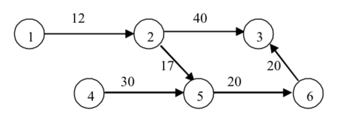
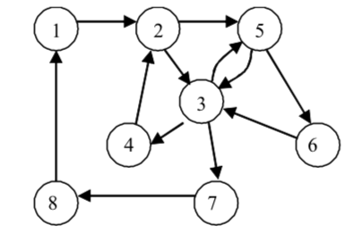
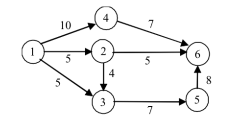

lec5
5. Задачи в графи
План:
Задачи за домашно 3 и 4
Компоненти на свързаност
Минимален път
Най-дълъг път в ацикличен граф
Хамилтонов цикъл
Ойлерови цикли
Максимален поток
Минимално покриващо дърво
Задачи за домашно 5 и 6
***Компоненти на свързаност
[5.6.1]
Задача: Даден е неориентиран граф с n върха и m
дъги. Да се провери дали е свързан, т.е. дали съществува път между
всеки два негови върха. В случай, че не е свързан, да се намерят
всички негови свързани компоненти (всички максимални свързани негови
подграфи).
Алгоритъм:
Задачата може да се реши чрез обхождане на графа, например в
дълбочина:
1) Започваме от произволен връх и всички върхове, които разгледаме
при обхождането, маркираме като принадлежащи на една свързана
компонента. Ако тя съдържа всички върхове на графа, следва, че той
е свързан.
2) Ако са останали необходени върхове, графът не е свързан.
Започваме ново обхождане от непосетен връх и строим втора свързана
компонента. Повтаряме стъпка 2), докато не останат необходени
върхове.
Сложността на алгоритъма е O(n+m).
***Компоненти на силна свързаност в ориентиран граф [5.6.2]
Ориентираният граф се нарича силно свързан, ако за всеки
два различни върха i и j съществува път както от i до j, така и от
j до i.
Задача: Ако графът не е силно свързан, да се намерят
всички компоненти на силна свързаност (всички максимални силно
свързани подграфи).
Алгоритъм:
1) Избираме произволен връх i.
2) Изпълняваме DFS(i) и намираме множеството от върхове R,
достижими от i.
3) Образуваме “обърнат” граф - посоките на всички ребра в който
са “обърнати”, т.е. реброто (i, j) става (j. i).
4) Изпълняваме обхождане в дълбочина от върха i - така
намираме множеството от върхове Q, достижими от i в обърнатия граф
(и съответно които достигат i в началния граф).
5) Сечението на R с Q дава една силно свързана компонента.
6) Изключваме тази компонента от графа, и ако има още върхове,
повтаряме стъпка 1).
Описаният алгоритъм има сложност O(n (n +
m)).
С наредба на върховете може да се получи и алгоритъм със сложност
O(m+n).
*** Минимален път в граф [5.4.2]
Задача: Даден е претеглен ориентиран граф. Да се намерят
най-кратките разстояния от даден връх i до всички останали
върхове.
Алгоритъм на Форд-Белман: (стр. 284)
1) Въвеждаме масив D, като след завършване на алгоритъма, D[i] ще
съдържа дължината на минималния път от s до всеки друг връх i от
графа. Инициализираме D[i] = A[s][i],
за всеки връх.
2) Оптимизираме стойността на D[i] за всяко i по-следния начин:
За всяко j, ако D[i]
> D[j] + A[j][i], присвояваме D[i]
= D[j] + A[j][i].
3) След повтаряне на стъпка 2) n – 2 пъти, в масива D ще
се съдържат търсените минимални пътища.
for(k = 1; k <= n - 2; k++)
/*повтаряме(n-2)пъти*/
for (i = 0; i < n; i++)
for (j = 0; j < n;
j++)
if
(D[i] > D[j] + A[j][i]) D[i] = D[j] + A[j][i];
Сложността на алгоритъма е O(n3).
Алгоритъм на Флойд: (стр. 285)
Алгоритъмът на Флойд е подобен на този на Форд-Белман.
Съществената разлика е, че след като той намира дължините на
минималните пътища между всяка двойка върхове от графа и то без
да е необходима допълнителна памет (използва се матрицата на
теглата на дъгите му).
Сложността на алгоритъма е O(n3).
Алгоритъм на Дейкстра (стр. 290)
Dijkstra's
algorithm - лекция в MIT
Dijkstra
Shortest Path
** Най-дълъг път в ацикличен граф
(критичен път) (стр. 295)
Задача: Екип от програмисти разработва програмен продукт,
който се състои от отделни задачи. Всяка задача има определена
продължителност и свързва два етапа от разработването на продукта:
начален и краен. Една задача не може да бъде започната, ако не е
завършен началният ѝ етап. За да бъде завършен изцяло един етап,
трябва да бъдат завършени всички задачи, за които той се явява
краен. Да се определи минималното време (при условие, че
разполагаме с неограничен брой програмисти), достатъчно за
завършването на целия проект. Проектът се счита за завършен,
когато са завършени всичките му етапи.
Алгоритъм:
Алгоритъмът се основава на техниката динамично оптимиране.

Алгоритъмът има сложност O(n+m).
*** Хамилтонов цикъл [5.4.4]
Хамилтонов цикъл в граф се нарича цикъл, съдържащ всеки връх от
графа точно веднъж. Граф, съдържащ такъв цикъл, се нарича
Хамилтонов.
Задача:
Да се провери дали даден граф е Хамилтонов.
Алгоритъм:
Намиране на всички прости пътища между начален и краен
връх, като двата върха съвпадат.
Задача за търговския пътник:
Да се намери Хамилтонов цикъл с минимална дължина в претеглен
граф.
Алгоритъм:
Пълно изчерпване с намиране на всички
хамилтовови цикли.
Travelling
salesman problem
Сложност на алгоритъма е O(n22n).
*** Ойлерови цикли [5.4.5]
Кьонингсбергските
мостове
Нека е даден свързан мултиграф. Цикъл, в който всяко ребро
участва точно по веднъж, се нарича Ойлеров цикъл. Един мултиграф
се нарича Ойлеров, ако в него съществува Ойлеров цикъл.
Аналогично се дефинира и Ойлеров път в граф.
Теорема (смятана за първата теорема в теорията на графите,
изказана от Ойлер без доказателство). Свързан неориентиран
мултиграф съдържа Ойлеров цикъл, тогава и само тогава, когато
всички върхове на графа са от четна степен.

ОЙЛЕРОВИ
ПЪТИЩА В ГРАФ
Задача за китайския пощальон
Задача: Даден е произволен претеглен свързан неориентиран
граф с цени по ребрата неотрицателни числа (за да има решение
задачата). Да се намери цикъл, който минава поне по един път през
всички ребра на графа, такъв че цената на този цикъл да е
минимална.
***
Максимален поток [5.4.6]
Нека е даден ориентиран граф, в който върховете са разделени в
три множества:
- множество от източници на някакъв цд;
- множество от консуматори;
- множество от междинни върхове - връзки, през които продуктът
може да бъде разпределян до други връзки или консуматори.
На всеки източник е съпоставено число - максимално количество продукт,
което може да доставя, а за всеки консуматор е дадено максималното
количество продукт, което може да приема.
Ориентираните ребра (i, j) от графа могат да бъдат интерпретирани
като "тръби", свързващи върховете i и j, като за всяко ориентирано
ребро дефинираме:
1) Функция c: c(i, j) ограничава количеството продукт,
което може да преминава през реброто (i, j), c(i, j) > 0.
2) Функция t: t(i, j) показва разхода (цената) за пренасяне на продукта
през реброто (i, j).
Общата задача за намиране на поток с минимална цена (minimum cost
network flow problem) се състои в това да се намери схема за
доставяне на продукта от източниците до консуматорите
така, че общият разход за пренасянето да е минимален.

- Форд-Фулкерсон
*** Минимално
покриващо
дърво [5.7.1]
Покриващо (oбхващащо) дърво в свързан неориентиран граф се нарича
всеки свързан ацикличен подграф, съдържащ всички възли на графа (Spanning tree).
Покриващо дърво с минимална сума от теглата на участващите в
него ребра се нарича минимално покриващо дърво.
Ще разгледаме два известни евристични алгоритъма, които решават
дадената задача.
- Крускал
- Прим
VisuAlgo
- visualising data structures and algorithms through animation
Data
Structure
Visualizations
Интересна лекция на доц.
Георги Георгиев - Скелета на курс във ФМИ за задачи в графи и
проблема NP = P.